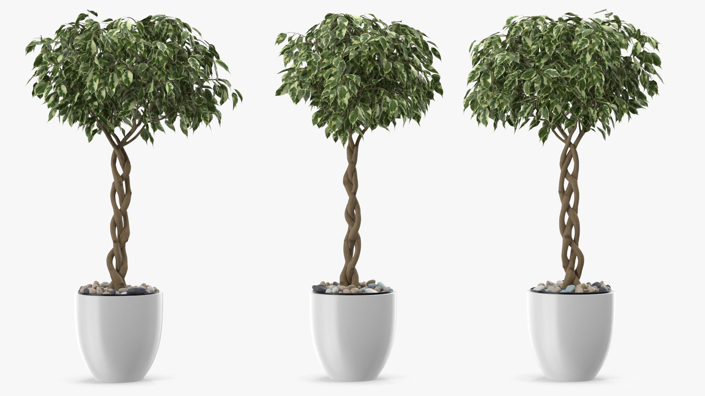
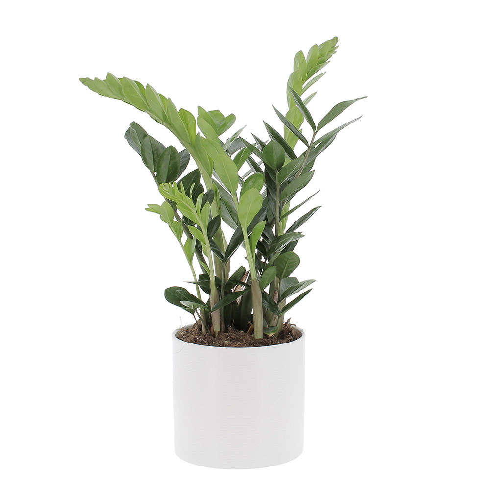
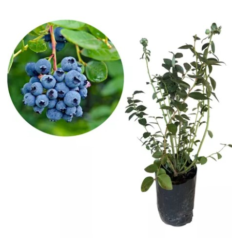

O projeto paisagístico de interiores, chamado de jardinismo ou plantscaping, consiste na proposta de inserção de espécies vegetais no espaço interno do ambiente de forma a personalizar e destacar o espaço.
Para fazer uso da vegetação adequadamente nos espaços internos é importante ter conhecimento das espécies vegetais, como suas características visuais e necessidades fisiológicas.
Com relação à aparência visual da planta, é importante ter conhecimento do volume e dos atributos formais, pois o elemento principal da vegetação na criação do espaço é o volume, ou seja, o formato da sua massa. Há três tipos principais de estratos vegetais em relação ao seu porte: arbóreo, arbustivo e forração.
Tipos de vegetação por porte
Fonte: Adaptada de Freepik (2023)
Imagem tipo desenho de um conjunto de espécies vegetais de diferentes formas e tamanhos. Na lateral direita há uma especificação na qual está escrito árvores, arbustos e forração. Árvores está representada pelo desenho de espécie vegetal de maior porte (altura), com um tronco central e ramos com folhas no topo. Arbustos está representada pelo desenho de espécies vegetais de tamanho médio e diferentes formatos, do tipo folhagens. Já forração está representada pelo desenho de espécie vegetal mais baixa em altura, remetendo às gramíneas.
Os atributos formais, por sua vez, estão relacionados às características visuais e estruturais, que permitem compreender a aparência da planta a fim de auxiliar no planejamento paisagístico e na adequada escolha para determinado ambiente, sendo eles:
Seu aspecto é um aglomerado mais ou menos circular de folhas que irradiam de um ponto de crescimento central.
Não apresentam um tronco único, mas ramificam-se desde a base, o que as torna tão largas quanto altas.

Forma de árvore com um único tronco ereto coroado de ramos e folhas no ápice.
Seu desenvolvimento é mais no sentido vertical do que horizontal. Pode ter folhas em toda a extensão do caule, ter um único caule ou vários, ou ainda não ter nenhum.
Pode variar quanto ao porte e ao formato dos estipes (caule ereto, rígido e longo) e das folhas.
Crescem normalmente em qualquer direção na qual encontram algo em que possam se agarrar ou pelo chão. Elas têm caule frágil, não conseguindo se elevar por si só.
As necessidades fisiológicas das plantas dizem respeito à planta como organismo vivo, vinculando a vegetação ao ambiente para sobreviver e crescer. Assim, avaliar as necessidades em relação ao tipo de solo, nível de umidade, quantidade de luz solar, padrão de crescimento e os ciclos anuais de florescimento e frutificação, bem como conhecer sua resistência ou suscetibilidade a doenças e pragas são ações essenciais para aplicá-las corretamente no jardinismo.
A disponibilidade de luz é fator decisivo na escolha das espécies vegetais para compor o projeto de interiores, podendo ser classificadas como de sol pleno, meia-sombra ou sombra. As plantas de sol pleno necessitam de mais de quatro horas diárias de iluminação solar direta e precisam estar sempre muito perto das janelas (luminosidade acima de 10.000 lux). As plantas de meia-sombra necessitam de poucas horas de insolação direta ao longo do dia e podem estar um pouco mais distantes das janelas (luminosidade varia de 5.000 a 10.000 lux). Já as plantas de sombra precisam de pouca luz ou iluminação indireta, suportam luz difusa e podem estar mais distantes ainda das janelas (luminosidade entre 500 a 5.000 lux).
Em espaços internos, a presença de plantas pode criar uma atmosfera acolhedora e agradável. No entanto, é importante selecionar cuidadosamente as espécies que prosperam em ambientes fechados, nos quais a quantidade de luz é geralmente menor do que no exterior. Além disso, optar por plantas que se adéquem ao cultivo em vasos ou floreiras é essencial para a ambientação interna.
Ao fazer a definição das espécies vegetais para um projeto de plantscaping é necessário saber identificá-las pela nomenclatura de mercado e pela nomenclatura botânica (nome científico).
O nome científico é formado por duas palavras latinizadas que definem a espécie, da seguinte forma:
Nome do gênero + epíteto específico = Nome da espécie
Já o nome de mercado é formado por uma palavra latinizada e outra não latinizada, da seguinte forma:
Nome do gênero + nome não latinizado = nome de mercado
Para auxiliar você em projetos de jardinismo, confira agora um guia de espécies vegetais que podem ser aplicadas em projetos de paisagismo de interiores. Se preferir, clique no botão a seguir para salvar o guia em seu computador.
Faça download do PDFMova a tabela para visualizar o conteúdo.
| Imagem | Tipos | Cuidados | Regionalidade | Luminosidade |
|---|---|---|---|---|
|

Caule acinzentado, folhas pequenas, brilhantes, de coloração verde ou variegada de branco ou amarelo. |
Fícus (Ficus benjamina) | Cultivar em solo fértil, drenável, enriquecido com matéria orgânica e irrigado regularmente. Espécie bastante rústica, mas não aprecia mudanças de lugar, correntes de ar frio, encharcamentos e ar-condicionado. | Exótica (Ásia) | Meia-sombra, sol pleno |

Folhas finas e recortadas com segmentos pequenos, lineares, franjadas em ramagem. |
Árvore-da-felicidade (Polyscias fruticosa) | Cultivar em solo drenável, enriquecido com matéria orgânica e mantido úmido, sem encharcar. Manter vaso com boa drenagem para garantir a retenção ideal de umidade. | Exótica (Ásia) | Luz difusa, meia-sombra, sol pleno |

Folhas verde-escuras brilhantes, grandes, com veias proeminentes e bordas onduladas. |
Figueira-lira (Ficus lyrata) | Cultivar em solo com boa capacidade de retenção de umidade, enriquecido com matéria orgânica, arejado e drenável. Irrigação regular, sem encharcar. Evitar ambientes com ar condicionado constante, pois as folhas ficam com as bordas queimadas. | Exótica (África) | Luz difusa, meia-sombra, sol pleno |

Caule simples e folhas decíduas, palmadas, com margens serrilhadas e tons bronzeados. |
Bordo japonês (Acer palmatum) | Cultivar em solo fértil, drenável e irrigado regularmente. Planta de clima temperado, aprecia umidade e locais com estações marcadas. | Exótica (Ásia) | Sol pleno |

Caule de base dilatada com folhas estreitas e lineares. |
Pata-de-elefante (Beaucarnea recurvata) | Cultivar em solo fértil, bem drenável e irrigado a intervalos bem espaçados para evitar o apodrecimento das raízes. Muito rústica, tolera o calor e o frio, não suportando apenas o encharcamento. | Exótica (América do Norte) | Meia-sombra, sol pleno |

Folhas, na coloração verde-escura, longas, lineares e dispostas em roseta no ápice dos ramos. |
Dracena-de-madagascar (Dracaena marginata) | Seus ramos podem ser tutorados para que fiquem retorcidos, de efeito mais escultural. A manutenção restringe-se à remoção das folhas baixas e velhas, e adubações anuais e regas semanais. | Exótica (África, Madagascar) | Meia-sombra, sol pleno |
|
Folhas, na coloração verde-escura, longas, lineares e dispostas em roseta no ápice dos ramos. |
Dracena-de-madagascar (Dracaena marginata) | Seus ramos podem ser tutorados para que fiquem retorcidos, de efeito mais escultural. A manutenção restringe-se à remoção das folhas baixas e velhas, e adubações anuais e regas semanais. | Exótica (África, Madagascar) | Meia-sombra, sol pleno |

Caule lenhoso e ramificado, com folhas largas e longas de cor verde brilhante. |
Pau-d’água (Dracaena fragrans) |
Cultivar em solo fértil, rico em matéria orgânica e bem drenável. As regas devem ser regulares, mantendo o solo levemente úmido. Não tolera geadas. |
Exótica (África, Madagascar) | Meia-sombra, luz difusa |

Minipalmeira com folhas pinadas, brilhantes e densamente arranjadas no topo da planta. |
Palmeira-camedórea (Chamaedorea elegans) | Precisa de muita luz, mas não deve ser exposta ao sol direto. O substrato ideal para a palmeira é rico em matéria orgânica e bem drenado. Uma boa opção é a mistura de areia grossa, terra vegetal e húmus. | Exótica (México, Guatemala e Belize) | Luz difusa, meia-sombra |

Caule com múltiplos estipes e folhas verde-escuras brilhantes, de forma palmada e plissada. |
Palmeira-ráfis (Rhapis excelsa) | Precisa de muita luz, mas não deve ser exposta ao sol direto. O substrato ideal para a palmeira é rico em matéria orgânica e bem drenado. Uma boa opção é a mistura de areia grossa, terra vegetal e húmus. | Exótica (China) | Sombra, meia-sombra |

Caule semelhante ao bambu. Folhas verdes pinadas, recurvadas e brilhantes. |
Palmeira areca-bambu (Dypsis lutescens) | Cultivar em solo fértil, leve, drenável, enriquecido com matéria orgânica e irrigado regularmente. Tolerante a transplantes e ao frio leve. Aprecia umidade do ar elevada e por esse motivo não deve ser utilizada em ambientes com ar-condicionado. | Exótica (África, Madagascar) | Meia-sombra, sol pleno |
|
Estipe único e de pouco diâmetro. As folhas são grandes, redondas a triangulares, de cor verde-brilhante, plissadas e com margem denteada. |
Palmeira-leque (Licuala grandis) | Cultivo em solo fértil, drenável, enriquecido com matéria orgânica e irrigado regularmente. Aprecia o calor e a umidade tropicais. Não resiste às geadas, estiagem ou frio intenso. Resguardar as plantas envasadas de ambientes com ar-condicionado. | Exótica (Oceania) | Meia-sombra, sol pleno |
Mova a tabela para visualizar o conteúdo.
| Imagem | Tipos | Cuidados | Regionalidade | Luminosidade |
|---|---|---|---|---|

Folhas coloridas, mescladas de vermelho, verde, amarelo, laranja, branco. |
Cróton (Codiaeum variegatum) | Cultivar em solo fértil, leve e enriquecido com matéria orgânica, com regas regulares. Tipicamente tropical, não tolera o frio e a geada. Não se adapta ao ar-condicionado. | Exótica (Ásia) | Sol pleno e meia-sombra |

Folhas grandes na cor verde, em várias tonalidades, com manchas rajadas de branco e amarelo. |
Comigo-ninguém-pode (Dieffenbachia amoena) | Cultivar em solo rico em matéria orgânica e com regas regulares. Deve-se ter atenção em caso de presença de crianças pequenas e animais domésticos, pois é uma planta bastante tóxica. | Exótica (América Central) | Luz difusa, meia-sombra |
|
Arbusto semilenhoso, com ramos longos e folhas compostas verdes brilhantes. |
Cheflera (Schefflera arborícola) | Para se desenvolver plenamente, deve ser plantada em solo fértil com adubação orgânica e regada regularmente. | Exótica (Ásia) | Meia-sombra, sol pleno |
|
Folhas de coloração verde com manchas centrais branco-amareladas. |
Aglaonema (Aglaonema spp) | Cultivar em substrato rico em matéria orgânica, bem drenável e irrigado regularmente. Não tolera o frio ou geadas; no inverno as regas podem ser esparsas. | Exótica (Ásia, Filipinas, Oceania) | Luz difusa |
|

Folhas ornamentais, espessas, de coloração verde-escura, muito brilhantes, com nervuras bem definidas. |
Zamioculcas (Zamioculcas zamiifolia) | Sensível a podridões no rizoma e amarelamento das folhas devido ao encharcamento. É preferível deixá-la passar sede do que regar em excesso. | Exótica (África) | Luz difusa, meia-sombra |
Mova a tabela para visualizar o conteúdo.
| Imagem | Tipos | Cuidados | Regionalidade | Luminosidade |
|---|---|---|---|---|
|
Folhas verdes, grandes e brilhantes. Brácteas (flores) vermelhas brilhantes em formato de coração. |
Antúrio (Anthurium andraeanum) | Exigente quanto à umidade, deve ser plantada em substratos ricos em matéria orgânica com regas frequentes e adubação. É uma planta rústica e de baixa manutenção. | Exótica (América do Sul) | Luz difusa, meia-sombra |

Visual exótico com folhas verdes e vermelhas, contendo pequenas bolinhas brancas, e flores brancas no caule. |
Begônia maculata (Begonia maculata) | Cultivar sob abundante luz filtrada. Prefere substratos ricos em matéria orgânica, permeáveis e drenáveis. Regar regularmente para manter o substrato úmido, sem encharcar. | Nativa | Luz filtrada, meia-sombra |
|
Ramos verdes achatados, de margens irregularmente denteadas. Flores corolas em dois níveis de cor rósea e branca. |
Flor-de-maio (Schlumbergera truncata) | Cultivar em substrato para epífitas misturado à terra vegetal, regada periodicamente. | Exótica (América do Sul) | Meia-sombra |

Efeito exótico, formato faz lembrar uma ave colorida. Flores de coloração laranja, com anteras e estigmas azuis, em forma de flecha. |
Estrelítzia (Strelitzia reginae) | Planta muito rústica, exige pouca manutenção, apenas semestrais para estimular a floração. | Exótica (África) | Sol pleno |

Folhagem verde e brilhante. Flor branca, semelhante a uma pétala, com um pequeno pendão internamente. |
Lírio-da-paz (Spathiphyllum wallisii) | Cultivado em substrato rico em matéria orgânica, com boa drenagem. Adubações anuais e regas frequentes. | Exótica (América do Sul) | Luz difusa, meia-sombra |

Folhas largas e brilhosas, localizadas no centro da planta. Flores do tipo padrão de haste longa e pétalas arredondadas. |
Orquídea falenopse (Phalaenopsis x hybridus) | Cultivar em substrato adequado à espécie, em geral preparados para epífitas, como fibras de coco, cascas de árvores, carvão vegetal, entre outros materiais. Deve ser irrigada sempre que o substrato se apresentar seco. Tolerante ao frio. | Exótica (Oceania, Polinésia) | Meia-sombra |
|
Caule dilatado e tortuoso, folhas verdes com nervura central bem definida e flores de formato tubular. |
Rosa-do-deserto (Adenium obesum) | Cultivar em solo drenável, neutro, arenoso, enriquecido com matéria orgânica e irrigado a intervalos esparsos e regulares. Não tolera o frio abaixo de 10ºC ou encharcamento. | Exótica (África, Oriente Médio) | Sol pleno |

Folhas longas, largas, macias, brilhantes, verde-escuras. Brácteas (flor) de cor vermelho vivo, rosa, laranja ou amarela, que surge no centro da roseta de folhas. |
Bromélia gusmânia (Guzmania sp) | Cultivar em substrato próprio para epífitas, como fibras e cascas de coco, cascas de pínus, entre outros materiais, misturados à terra vegetal. Aprecia regas frequentes, sem encharcamento. | Exótica (América do Sul) | Meia-sombra |
Mova a tabela para visualizar o conteúdo.
| Imagem | Tipos | Cuidados | Regionalidade | Luminosidade |
|---|---|---|---|---|

Árvore frutífera e ornamental, com tronco ramificado, folhas estreitas e afiladas e frutos pequenos alaranjados. |
Laranjinha kinkan (Fortunella margarita) | Ideal para cultivar em vasos em solo fértil, profundo e bem drenável. Aprecia regas regulares e resiste ao frio intenso. | Exótica (Ásia) | Meia-sombra, sol pleno |

Tronco ramificado, copa densa de folhas pequenas, escuras, brilhantes e esverdeadas. Fruto pequeno, variando nas cores vermelha e laranja. |
Acerola (Fortunella margarita) | Cultivar em solo profundo, drenável, enriquecido com matéria orgânica e irrigado regularmente. | Exótica (América) | Sol pleno |
|
Tronco tortuoso e liso, copa densa e arredondada, folhas opostas, simples e brilhantes. Fruta redonda com sulcos longitudinais na cor vermelha. |
Pitanga (Eugenia uniflora) | Cultivar em solo fértil, enriquecido com matéria orgânica e irrigado regularmente por pelo menos dois anos após o plantio. Não tolera salinidade ou estiagem prolongada. | Nativa (América do Sul) | Sol pleno |
|
Tronco claro, no qual os frutos e as flores crescem aderidos. Fruto pequeno, com casca roxa. Folhas simples. |
Jabuticaba (EMyrciaria cauliflora) | Cultivar em solos férteis e ricos em matéria orgânica. É muito exigente em água, devendo ser irrigada regularmente. É pouco tolerante às secas ou geadas. | Nativa (América do Sul) | Sol pleno |

Árvore com copa arredondada e folhas elípticas. Fruto amarelo esverdeado e com casca rugosa. |
Limão (Citrus limon) | Cultivar sob sol pleno em solo fértil, bem drenável, profundo, calado e enriquecido com matéria orgânica, irrigado a intervalos regulares. Árvore rústica, de fácil manutenção. | Exótica (Ásia) | Sol pleno |

Tronco acinzentado, folhas elípticas e espessas. Fruto esférico de casca grossa amarelo-avermelhado. |
Romãzeira (Punica granatum) | Rústica, tolera moderadamente a salinidade, as secas e o encharcamento. Resiste às temperaturas baixas de inverno. É crescente seu cultivo em vasos. | Exótica (Oriente Médio) | Sol pleno |
|

Arbusto ramificado com folhas verde-escuras, brilhantes e elípticas. Frutos esféricos com casca azul arroxeada. |
Mirtilo (Vaccinium sp) | Cultivado em solo fértil, com pH ácido, drenável, enriquecido com matéria orgânica e irrigado regularmente. | Exótica (América do Norte, Ásia, Europa) | Meia-sombra, sol pleno |
|
Árvore pequena de folha perene, pautada pela coloração verde e pela penugem felpuda acastanhada dos galhos. Fruto carnoso, com casca e polpa amarelas ou alaranjadas. |
Nêspera (Eriobotrya japônica) | Cultivar em solo fértil, neutro, profundo, enriquecido com matéria orgânica e irrigado regularmente nos primeiros anos de implantação. | Exótica (Ásia) | Sol pleno |
Mova a tabela para visualizar o conteúdo.
| Imagem | Tipos | Cuidados | Regionalidade | Luminosidade |
|---|---|---|---|---|

Aspecto pontiagudo e folhagens fechadas em formato cilíndrico, eretas, rígidas e lisas, de cor verde-escura a acinzentadas, com raias verde-claras. |
Lança-de-são-jorge (Sansevieria cylindrica) | Não resiste ao encharcamento, apodrecendo rapidamente nessa condição. | Exótica (África) | Luz difusa, meia-sombra, sol pleno |

As folhas são ovadas e brilhantes de cor verde-escura e com o centro verde-limão. |
Filodendro-brasil (Philodendron hederaceum) | Cultivar em solo fértil, enriquecido com matéria orgânica e irrigado frequentemente. Ao ser cultivada como trepadeira, é interessante oferecer-lhe um suporte fixo e poroso, para que possa subir e se fixar bem. | Exótica (América Central, América do Norte, América do Sul) | Luz difusa, meia-sombra |

Folhas eretas em forma de espada, tem listras horizontais de cor branca-esverdeada, acinzentadas em zigue-zague. |
Espada-de-são-jorge (Sansevieria trifasciata) | Cultivar em vasos ou em maciços. Resiste tanto à estiagem quanto ao frio e ao calor, além de ser pouco exigente quanto à fertilidade. | Exótica (América Central, América do Norte, América do Sul) | Meia-sombra, sol pleno |

Folhas grandes e largas, recortadas e com alguns furos, na cor verde-escura. |
Costela-de-adão (Monstera deliciosa) | Cultivar em substrato rico em matéria orgânica, com regas regulares, plantada isolada ou em pequenos grupos. Pode ser tutorada para escalar sobre outras plantas e paredes. | Exótica (América do Norte) | Meia-sombra |

Forma de touceira volumosa, com folhas longas e subdivididas em folículos rendados na coloração verde. |
Samambaia-americana (Nephrolepis exaltata) | Planta rústica e que não tolera frio intenso. Os vasos devem ser irrigados com frequência, porém devem ser bem drenados. A alta umidade do ar as favorece. | Exótica (África, América Central, América do Norte, América do Sul, Ásia, Indonésia) | Luz difusa, meia-sombra |

Folhas verdes, grandes, cheias de detalhamentos e recortes que lembram rendas. |
Renda-portuguesa (Davallia fejeensis) | Cultivar em vasos e jardineiras com substrato rico em matéria orgânica, sempre à meia-sombra, com regas frequentes. Tem a possibilidade de ser plantada na vertical. Aprecia o calor e a alta umidade. Não tolera frio intenso. | Exótica (Austrália, Ilhas Fiji, Oceania) | Luz difusa, meia-sombra |

Arbusto lenhoso com folhas amarelo-esverdeadas vibrantes, de formato pequeno e delicado. |
Pingo de ouro (Duranta erecta aurea) | Cultivar em solo fértil e enriquecido com matéria orgânica, com regas regulares. Não é tolerante à seca. Tolera o frio e as geadas. | Nativa | Sol pleno |

Caules eretos, finos, foliosos e ramificados na base. Folhas, verdes e estreitas, ligeiramente torcidas. |
Bambu-da-sorte (Dracaena sanderianal) | Cultivar em solo fértil, rico em matéria orgânica e drenado. As regas devem ser regulares, mantendo o solo levemente úmido. | Exótica (África) | Meia-sombra ou luz difusa |

Ramos eretos e suculentos. Folhas elítico-ovaladas, almofadadas, pintadas de prata sobre o verde brilhante. |
Alumínio (Pilea cadierei) | O solo deve ser fértil, arenoso, rico em matéria orgânica e bem drenado. Não é tolerante ao frio rigoroso ou às geadas. | Exótica (Ásia) | Meia-sombra |
|
Folhagem densa e ornamental, com folhas grandes e assimétricas de cores verde, bronze, rosa ou cinza. |
Begônia rex (Begonia rex) | Irrigar de forma que alcancem o solo, sem molhar as folhas. Requer boa ventilação, sem excessos. Teme o frio intenso ou as geadas. | Exótica (Ásia) | Luz difusa, meia-sombra, sombra |
Mova a tabela para visualizar o conteúdo.
| Imagem | Tipos | Cuidados | Regionalidade | Luminosidade |
|---|---|---|---|---|

Galhos com muitas ramificações, com suas folhas em formato oval na cor verde-clara. |
Manjericão (Ocimum basilicum) | Cultivar em solo fértil, bem drenável, enriquecido com matéria orgânica e irrigado regularmente. Pode ser plantado em vasos. | Exótica (Ásia) | Sol pleno |
|
Caule lenhoso e ramificado. Folhas em forma de lança verde e com nervuras. Fruto cone na cor vermelha, amarela, verde, laranja ou violeta. |
Pimenta (Capsicum spp) | Cultivar em solo fértil, profundo, leve, enriquecido com matéria orgânica e irrigado regularmente. Não tolera estiagem, encharcamento, frio ou geadas. | Exótica (América) | Meia-sombra, sol pleno |
|
Arbusto ramificado com hastes lenhosas e folhas filiformes pequenas e verdes. |
Alecrim (Rosmarinus officinalis) | Cultivar em solo perfeitamente drenável. Adapta-se bem a solos pobres, arenosos e pedregosos. | Exótica (Europa) | Sol pleno |
|
Planta com caule lenhoso, folhas acinzentadas e flores azuis a violáceas. |
Sálvia (Salvia officinalis) | Cultivar em solo drenável, neutro a levemente alcalino e enriquecido com matéria orgânica. Resiste ao frio, mas não tolera locais com inverno demasiadamente frio e úmido ao mesmo tempo. | Exótica (Europa, Mediterrâneo) | Meia-sombra, Sol pleno |
|
Haste ereta, com folhas delgadas e pequenas flores brancas. |
Camomila (Matricaria recutita) | Cultivar em solo fértil, drenável, enriquecido com matéria orgânica e irrigado a intervalos regulares. Aprecia o clima ameno e não tolera o calor excessivo. | Exótica (Ásia, Europa) | Sol pleno |
|
Caule curto e folhas pinadas, compostas por folíolos em formato de cunha, na coloração verde-intenso. |
Salsa (Petroselinum crispum) | Cultivar em solo fértil, drenável, enriquecido com matéria orgânica e irrigado regularmente. Tolera frio e geadas, mas ressente-se com o calor intenso ou estiagem. | Exótica (África, Europa, Mediterrâneo, Tunísia) | Sol pleno |
|
Folhas pequenas, ovais, pontiagudas e quase na cor verde. |
Orégano (Origanum vulgare) | Cultivar em solo fértil, bem drenável, enriquecido com matéria orgânica e irrigado a intervalos regulares. Resistente a curtos períodos de estiagem. | Exótica (Europa, Mediterrâneo) | Sol pleno |

Folhas opostas de formato oval e bordas serrilhadas, ponta aguda e base arredondada. |
Hortelã (Mentha sp) | Rústica e de cultivo fácil. O solo deve ser fértil e enriquecido com matéria orgânica para uma boa produção. As regas devem ser regulares, deixando o solo permanentemente úmido, porém sem encharcamento. Tolera geadas. | Exótica (América do Norte, Ásia, Austrália) | Meia-sombra, sol pleno |
|
Bulbos brancos e alongados. Folhas verdes, compridas e cilíndricas, como tubos ocos. |
Cebolinha (Allium fistulosum) | Cultivar em solo fértil, bem preparado, enriquecido com matéria orgânica e irrigado regularmente. Adapta-se ao frio e ao calor, mas prefere o clima ameno. | Exótica (Ásia, China) | Sol pleno |

Folhas longas, largas, suculentas e verdes, com bainhas compridas. Falso caule tenro, branco e comestível, dilatado na base. |
Alho poró (Allium porrum) | Cultivar em solo fértil, calado, leve e enriquecido com matéria orgânica. Irrigar regularmente. | Exótica (Europa) | Sol pleno |
Mova a tabela para visualizar o conteúdo.
| Imagem | Tipos | Cuidados | Regionalidade | Luminosidade |
|---|---|---|---|---|

Trepadeira com folhas verdes com manchas mais claras recortadas em formato de estrela. |
Hera (Hedera helix) | Cultivada em solo fértil, bem drenável e enriquecido com matéria orgânica, irrigado periodicamente. Aprecia a umidade e o frio subtropical e não suporta solos encharcados. É tolerante a geadas. | Exótica (Europa África, Ásia, Ilhas Canárias) | Meia-sombra, sol pleno |

Planta pendente com folhas delicadas em verde-claro e galhos dilatados. |
Peperômia-filodendro (Peperomia scandens) | Cultivar em solo fértil, leve e enriquecido com matéria orgânica, com regas regulares. Não é tolerante a geadas. Aprecia o litoral. | Nativa | Luz difusa, meia-sombra |

Trepadeira ornamental com folhas em formato de coração, nas cores verde ou verde rajada de amarelo e branco. |
Jiboia (Epipremnum pinnatum) | Para ter uma folhagem sempre bonita e de crescimento rápido, deve ser plantada em substrato rico em matéria orgânica e receber regas periódicas. | Exótica (Ilhas Salomão, Oceania) | Luz difusa, meia-sombra, sol pleno |

Planta ornamental de coloração verde clara com nervuras brancas. |
Singônio (Syngonium angustatum) | Cultivar em substrato rico em matéria orgânica. Aprecia a umidade e regas regulares. Não é tolerante ao frio. | Exótica (América Central) | Luz difusa, meia-sombra |

Planta pequena com folhas verdes rajadas de branco, que parecem gramínea. |
Clorofito (Chlorophytum comosum) | Cultivar em solo fértil, rico em matéria orgânica, bem drenado e mantido úmido. | Exótica (África) | Pleno sol, meia-sombra |

Folhagem em tons de cinza, esbranquiçada e de textura aveludada e recortada. |
Cinerária marítima (Senecio douglasii) | Cultivar em solo fértil, rico em matéria orgânica e bem drenável. As regas devem ser regulares, mantendo o solo levemente úmido. Planta tolerante ao frio. | Exótica (América do Norte) | Sol pleno |

Hastes ramificadas, suculentas com folhas verde-arroxeadas com duas faixas prateadas brilhantes. |
Lambari (Tradescantia zebrina) | Não tolera baixas temperaturas de inverno. A intensidade da cor é maior em contato direto com o sol. | Exótica (América do Norte) | Meia-sombra, luz difusa |
|
Hastes inclinadas, folhas de cor púrpura e flores pequenas na cor rosa-claro |
Trapoeraba-roxa (Tradescantia pallida purpurea) | Cultivar em solo fértil e úmido composto de terra de jardim e terra vegetal. Exige ainda regas regulares e gosta de frio. | Exótica (América do Norte) | Meia-sombra, sol pleno |

Folhagem ornamental sem caule e com folhas finas, brilhantes e escuras. |
Grama preta (Ophiopogon japonicus) | Não se desenvolve bem em climas frios com geadas, mas em regiões em que o inverno seja ameno. Tolerante ao calor e à seca. | Exótica (Ásia) | Meia-sombra, luz difusa |
Mova a tabela para visualizar o conteúdo.
| Imagem | Tipos | Cuidados | Regionalidade | Luminosidade |
|---|---|---|---|---|

Gramínea baixa com folhas verde-claras, delicadas, lineares, estreitas, muito abundantes. |
Grama-esmeralda (Zoysia japonica) | Rústica. Cultivar em solos férteis, com adubações semestrais e regas regulares. Não é indicada para locais de tráfego intenso, nem para áreas sombreadas. | Exótica (Ásia) | Sol pleno |

Gramínea baixa, com folhas largas, sem pelos, com um verde intenso. |
Grama-são-carlos (Axonopus compressus) | Cultivar em solo fértil, com regas frequentes, pois não resiste à seca. Não tolera sombra total. | Nativa | Meia-sombra, sol pleno |

Folhas lineares, estreitas e macias, de coloração verde-escura azulada. |
Grama-azul (Poa pratensis) | Cultivada em solos férteis, com adubações semestrais e regas regulares. É contraindicada para locais quentes, devendo ser usada em regiões serranas. | Exótica (África, Ásia, Europa) | Sol pleno |
Veja as plantas queridinhas do urban jungle, estilo de decoração que busca trazer a natureza para dentro dos lares de maneira harmoniosa e integrada à decoração.
Mova a tabela para visualizar o conteúdo.
| Imagem | Tipos | Imagem | Tipos |
|---|---|---|---|
|
|
Hera (Hedera helix) |
|
Espada-de-são-jorge (Sansevieria trifasciata) |
|
|
Peperômia-filodendro (Peperomia scandens) |
|
Costela-de-adão (Monstera deliciosa) |
|
|
Jiboia (Epipremnum pinnatum) |
|
Samambaia-americana (Nephrolepis exaltata) |
|
|
Lírio-da-paz (Spathiphyllum wallisii) |
|
Renda-portuguesa (Davallia fejeensis) |
|
|
Palmeira-camedórea (Chamaedorea elegans) | Antúrio (Anthurium andraeanum) | |
|
|
Palmeira-ráfis (Rhapis excelsa) |
|
Begônia rex (Begonia rex) |
Há inúmeras opções de plantas que podem ser aplicadas em projetos de jardinismo. Para explorar todas peculiaridades englobadas, é fundamental adquirir conhecimento sobre as espécies vegetais, o que pode ser obtido por experiência prática e pesquisa em bibliografias especializadas.
Assim, a classificação dos tipos de espécies vegetais é uma maneira de estudar a vegetação nos projetos de paisagismo de interiores, primeiramente se concentrando nos aspectos mais abrangentes, tais como porte, forma/volume, cores e texturas, e depois fazendo a especificação detalhada da espécie.